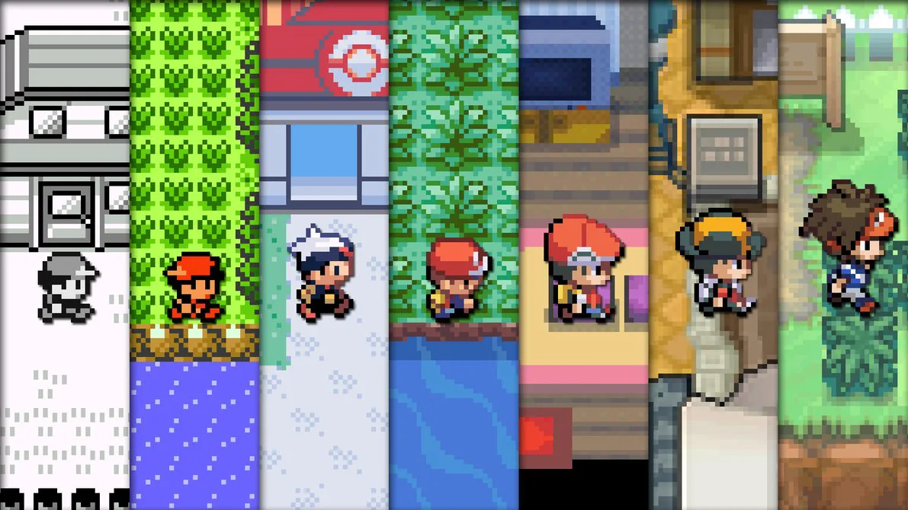
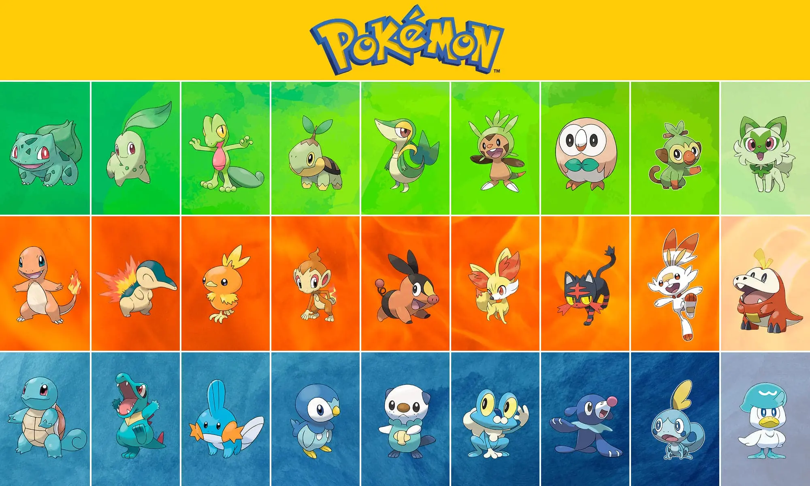

La saga principal de Pokémon ha dejado una marca indeleble en la cultura popular y se ha convertido en una de las franquicias más icónicas y exitosas de la industria de los videojuegos.
Desarrollada por Game Freak y publicada por Nintendo, la serie Pokémon ha evolucionado a lo largo de los años, cautivando a jugadores de todas las edades con su encanto,
estrategia y la emocionante tarea de convertirse en un Maestro Pokémon.
La saga Pokémon se enmarca principalmente dentro del género de los juegos de rol (RPG) con un enfoque en la recolección, entrenamiento y batallas de criaturas conocidas como Pokémon.
La serie ha explorado varias regiones ficticias, cada una repleta de Pokémon únicos y desafíos.
A lo largo de las diferentes generaciones de juegos, la historia central de Pokémon sigue siendo la misma:
un joven entrenador de Pokémon emprende un viaje para convertirse en el Campeón de la Liga Pokémon. Además de este objetivo principal,
cada juego presenta una trama única que involucra a Pokémon legendarios, organizaciones malévolas y, a menudo, la necesidad de salvar la región de una amenaza inminente.
La serie principal de Pokémon ha lanzado numerosos títulos a lo largo de las décadascontando actualmente con 9 generaciones, comenzando con "Pokémon Red" y "Pokémon Green" en 1996 en Japón.
Algunos títulos notables incluyen "Pokémon Gold" y "Pokémon Silver", "Pokémon Ruby" y "Pokémon Sapphire", así como las generaciones más recientes como "Pokémon Sword" y "Pokémon Shield".
Además dd contar con numerosos spin-off. Cada juego introduce nuevos Pokémon, mecánicas de juego y regiones por explorar.
El núcleo de la experiencia Pokémon radica en la recolección y entrenamiento de estas criaturas, así como en la participación en emocionantes batallas.
La mecánica de captura de Pokémon mediante el uso de Pokébolas y la estrategia en las batallas por turnos han sido elementos fundamentales a lo largo de la serie,
proporcionando una experiencia única y satisfactoria para los jugadores.
 
¿Haz jugado alguna generación de esta saga?
Primera generación
Segunda generación
Tercera generación
Cuarta generación
Quinta generación
Sexta generación
Sétima generación
Octava generación
Novena generación